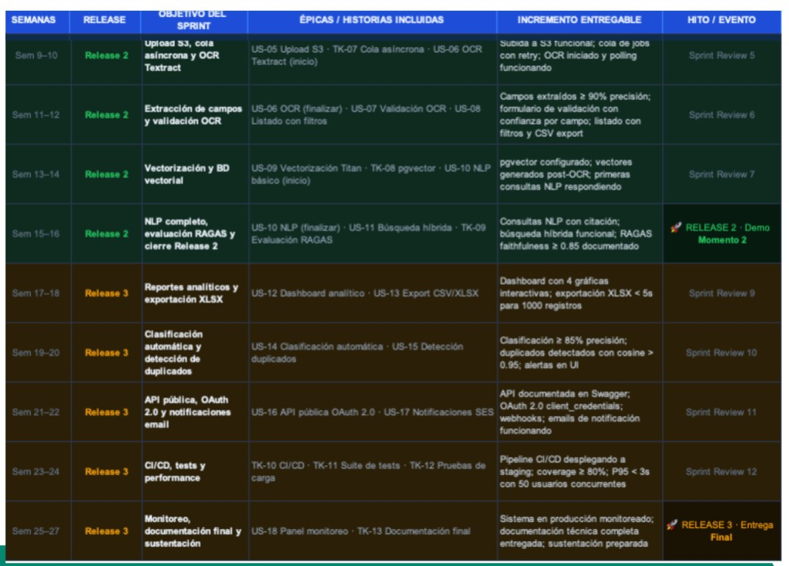
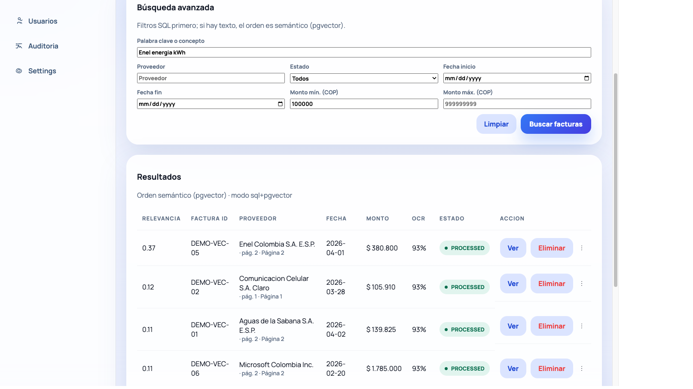
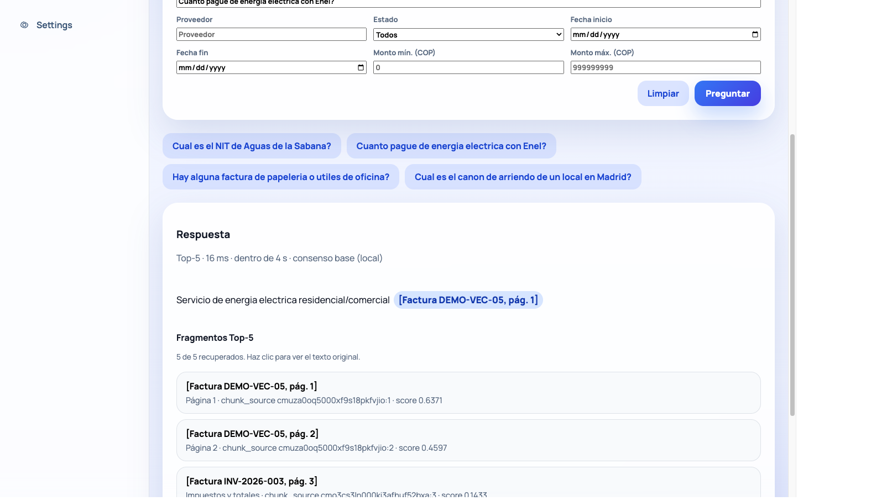
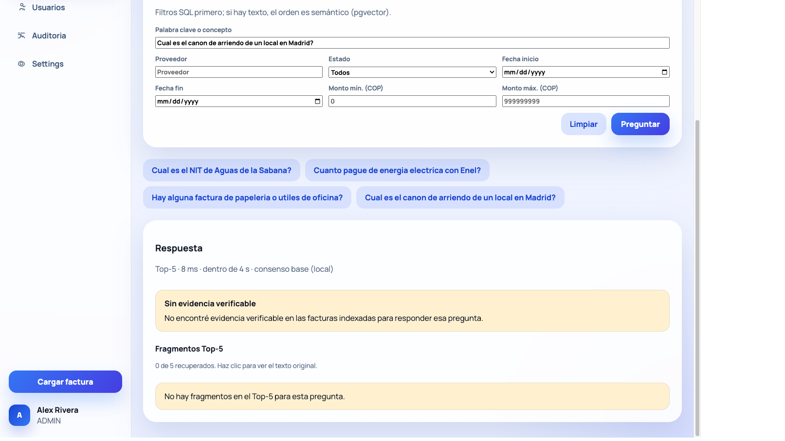
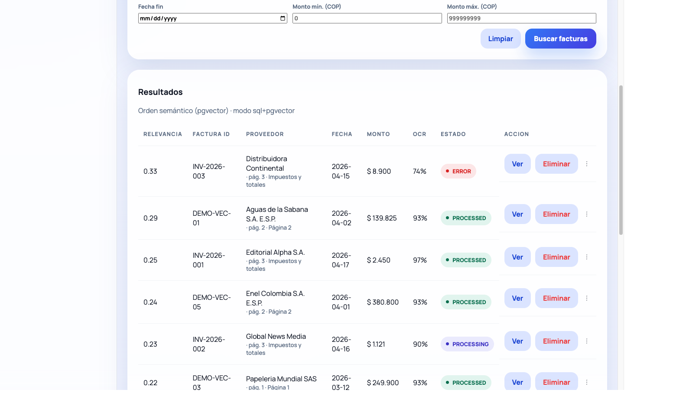

De la lectura de facturas a la búsqueda semántica con pgvector y las consultas en lenguaje natural con respuestas citadas (RAG), funcionando incluso sin servicios en la nube.

| Bloque del plan | Estado |
|---|---|
| Sem 9–10 · Upload S3, cola, OCR Textract | Parcial Carga y OCR locales; S3 y cola no |
| Sem 11–12 · Extracción y validación | Casi completo Falta CSV y medir precisión ≥ 90 % |
| Sem 13–14 · Vectorización y BD vectorial | Hecho pgvector; embedding propio, no Titan |
| Sem 15–16 · NLP, búsqueda híbrida, RAGAS | Hecho con reservas Calidad de ranking por mejorar |
| Release 3 · sem. 17–27 (5 bloques) | No iniciado |
Lectura: el Sprint 4 cubre lo que el plan reservaba para las semanas 13–16 (vectorización, NLP con citación, búsqueda híbrida y RAGAS). La demo «Release 2 · Momento 2» queda pendiente de presentar.
Cada criterio sale de la columna «Incremento entregable» del Release Plan oficial.
| Criterio del plan | Estado |
|---|---|
| Subida de archivos a S3 | Pendiente disco local |
| Cola de jobs con reintentos | Pendiente |
| OCR iniciado y con polling | Parcial OCR síncrono |
| Campos extraídos ≥ 90 % de precisión | Pendiente sin medir |
| Formulario de validación con confianza por campo | Cumplido |
| Listado con filtros | Cumplido SBC-25 |
| Exportación CSV | Pendiente |
| Criterio del plan | Estado |
|---|---|
| pgvector configurado | Cumplido SBC-15 |
| Vectores generados después del OCR | Cumplido |
| Primeras consultas NLP respondiendo | Cumplido SBC-17 |
| Consultas NLP con citación | Cumplido SBC-29 |
| Búsqueda híbrida funcional | Cumplido SBC-25 |
| RAGAS faithfulness ≥ 0,85 documentado | Cumplido 1,00 (métrica local) |
Desviaciones del plan: S3 + cola asíncrona + Textract, exportación CSV y medición de precisión de extracción siguen abiertas. Se proponen ajustes en la diapositiva 7.
Matiz de RAGAS: es una implementación propia en Node (sin LLM-juez), no el paquete Python oficial; sirve como línea base repetible.
Sprints de 3 semanas, capacidad de 20 SP y estimación calibrada: 1 SP ≈ 4 horas.
feature/sbc-15-…) y commits con los códigos de Jira.Objetivo: pasar de la búsqueda en memoria a búsqueda semántica real con pgvector y entregar consultas en lenguaje natural con respuestas citadas, sin depender de claves de nube.
| Historia | SP | Origen | Resultado |
|---|---|---|---|
| SBC-15 Vectorización y BD vectorial | 5 | Planificada | Hecha |
| SBC-29 RAG (SBC-30, 31, 32) | 5 | Planificada | Hecha |
| SBC-23 / SBC-24 Citas por página y sanitizadas | 2 + 3 | Planificada (ya existían en código S3) | Cerradas con evidencia |
| SBC-25 Búsqueda híbrida | 5 | Agregada en el sprint | Hecha |
| SBC-17 Consultas en lenguaje natural | 3 | Agregada en el sprint | Hecha |
| SBC-8 OCR en nube opcional | — | Spike ampliado | Parcial · sin credenciales |
| SBC-7 Soft-delete + auditoría | 3 | Condicionada a capacidad | Pasa al Sprint 5 |
Lectura de la velocidad: 18 SP son trabajo nuevo; los 5 SP de SBC-23/24 fueron cierre de algo ya implementado, por lo que el esfuerzo real fue menor que el nominal.
Se corrigieron descripciones: pgvector HNSW, hashed-bow-96-v2 (no SBERT).
| SBC-53 Documentar stack | 2 · Should |
| SBC-47 Dashboard en COP | 5 · Should |
| SBC-7 Soft-delete | 3 · Could |
| SBC-43 Reescribir criterios | 8 · Won’t S4 |
| Spike ONNX embeddings | 2 · Could |
| Spike OCR nube | 2 · Could |
Mejorar el ranking: sumar solapamiento léxico a /invoices/search y reordenar el Top-5 (≈ 3 SP · Must).
Pruebas E2E mínimas: cargar → buscar → consultar (≈ 3 SP · Should).
Alinear Jira con el stack real: tareas de limpieza de tickets antiguos (≈ 1 SP · Should).
Propuesta para validar: no cambia el alcance de Release 3, solo reubica lo que quedó abierto de Release 2.
| Elemento | Plan original | Situación actual | Ajuste propuesto |
|---|---|---|---|
| Upload S3 + cola con reintentos | R2 · sem. 9–10 | Disco local, OCR síncrono | Mover a bloque de endurecimiento en R3 o descartar si no hay cuenta AWS (decisión pendiente) |
| OCR Textract | R2 · sem. 9–10 | Ramal opcional sin credenciales | Spike de 15 PDF (Document AI vs Textract) en Sprint 5 |
| Precisión de extracción ≥ 75 % | R2 · sem. 11–12 | No medida | Medir en el mismo spike y fijarla como criterio de cierre de R2 |
| Exportación CSV | R2 · sem. 11–12 | Pendiente | Unirla a US-13 (CSV/XLSX) de R3 · sem. 17–18 |
| Embeddings Titan | R2 · sem. 13–14 | Embedding propio de 96 dim. | Mantener para MVP; spike de modelo multilingüe pequeño (ONNX) |
| RAGAS ≥ 0,85 | R2 · sem. 15–16 | Fidelidad 1,00; precisión 0,44; relevancia 0,31 | Añadir metas de precisión y relevancia (≥ 0,60 y ≥ 0,50) para el Sprint 5 |
| Demo Release 2 · Momento 2 | R2 · sem. 15–16 | Pendiente de presentar | Presentarla tras corregir el ranking de búsqueda |
Como sistema, quiero vectorizar cada factura procesada para habilitar búsquedas semánticas rápidas.
Qué se hizo: columna vector(96) con índice HNSW en PostgreSQL + pgvector; indexación automática al guardar y reindexado si cambia el modelo; seed DEMO-VEC-01…06.
Como usuario, quiero respuestas ancladas a fragmentos de mis facturas, con su origen citado.
Qué se hizo: retriever + cadena LangChain, Top-K = 5, prompt few-shot en español, consenso base/ajustado (Bedrock si hay claves, local si no), citas saneadas y evaluación RAGAS.
[Factura X, pág. Y] y citas inventadas descartadasnpm run eval:ragasBuscar facturas por texto, proveedor, fechas y montos.
Qué se hizo: filtros SQL primero y ranking semántico después; GET /api/invoices/search; formulario avanzado.
Preguntar en español y ver de dónde sale cada dato.
Qué se hizo: respuesta citada, fragmentos clicables, Top-5 siempre visible, estado «sin evidencia» y latencia en pantalla.
Leer facturas escaneadas sin digitar a mano.
Qué se hizo: nativo → Document AI → Textract → Tesseract. Sin claves, o si falla, se omite el ramal.
Registro de trabajo: una rama por historia, apiladas para evitar conflictos — sbc-15 → sbc-29 → sbc-25 → sbc-17 → sbc-8 → s4-docs → s4-metricas.
.env.example, Compose)Se arrastran como acciones al Sprint 5; ninguna impide el uso local del sistema.
Similitud en SQL con índice HNSW. Exige imagen Docker con pgvector.
Bolsa de palabras hasheada de 96 dim., sin costo ni descargas. Calidad semántica limitada; spike ONNX pendiente.
La clase clásica ya no existe: RunnableSequence + retriever propio. Equivalente funcional.
Bedrock (Nova Lite/Pro) si hay claves; si no, grounded top-1/top-3. Nunca depende de una API externa.
Repetible y sin costo, pero no comparable 1 a 1 con el paquete Python con LLM-juez.
Nativo → nube → Tesseract. Sin SQS ni asincronía en este sprint.
Se reduce el universo con filtros estructurados antes de ordenar por similitud. Consecuencia observada: el ranking de la búsqueda de facturas usa solo similitud semántica; el solapamiento léxico solo está en la ruta RAG (ver hallazgo en la diapositiva 17).
pruebas PASS · 0 fallos
20 iteraciones por endpoint tras calentamiento · Docker local · 14 facturas / 26 chunks · 0 errores. Barras relativas al endpoint más lento.
Valores p95. SLA del sprint: 4.000 ms.
10 búsquedas semánticas simultáneas · p95 24,6 ms
HNSW con 20.000 vectores (sin índice: 1,99 ms)
carga de PDF con texto nativo
imagen PNG con Tesseract
Cómo leerlo: mediciones locales con un usuario y pocos datos; demuestran el cumplimiento del SLA y la ausencia de errores, no la capacidad en producción. La escala de pgvector se probó con vectores sintéticos en una tabla temporal.
| Caso | Precision | Relevancy | RAGAS |
|---|---|---|---|
| enel-energia | 0,40 | 0,33 | 0,68 |
| aguas-nit | 1,00 | 0,38 | 0,85 |
| papeleria | 0,40 | 0,44 | 0,71 |
| claro-plan | 0,40 | 0,24 | 0,66 |
| sin-evidencia | 0,00 | 0,17 | 0,54 |
| Promedio | 0,44 | 0,31 | 0,69 |
Para «¿cuánto pagué de energía?» el generador local devuelve la línea más cercana («Servicio de energía eléctrica…») y no el monto. La fidelidad es perfecta porque nunca inventa, pero eso no basta: hay que mejorar el ranking del Top-5 y probar generación con Bedrock.

Caso real, tomado de la app en Docker. Ver el contraejemplo con una consulta genérica en la diapositiva 17.

[Factura DEMO-VEC-05, pág. 1] y fragmentos con chunk_source y puntaje.
DoD de SBC-17 visible en pantalla: respuesta citada · fragmentos Top-5 (N de 5) · estado vacío explícito · latencia y marca de SLA.

/invoices/search.Se muestra a propósito: los datos controlados de la demo ocultaban este problema.
| Riesgo | Nivel | Mitigación |
|---|---|---|
| Ranking de búsqueda poco fiable con consultas genéricas | Alto | Puntuación híbrida y más casos |
| Embeddings hasheados limitan la semántica | Medio | Spike ONNX multilingüe |
| RAG sin medir con Bedrock real | Medio | Medir con credenciales |
| OCR en nube sin validar | Medio | Spike con 15 PDF |
| Dataset pequeño, sin prueba de carga real | Medio | Más datos reales |
| Sin pruebas E2E de frontend | Medio | E2E mínimas en Sprint 5 |
| Credenciales en variables de entorno | Bajo | .env fuera de Git |
node_modules/invoices/searchEl Sprint 4 entrega el núcleo inteligente del producto: indexación vectorial, búsqueda y consultas con evidencia verificable, probado y medido. La siguiente etapa no es agregar más funciones, sino subir la calidad de lo que ya existe y cerrar los pendientes del Release 2 antes de entrar al Release 3.